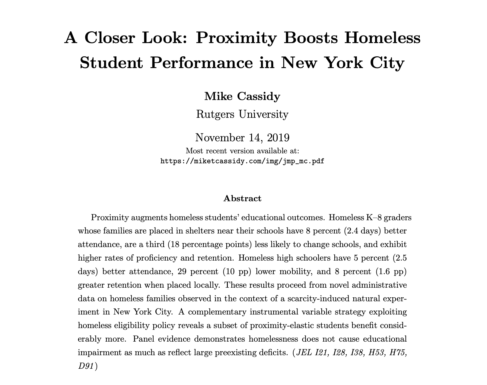
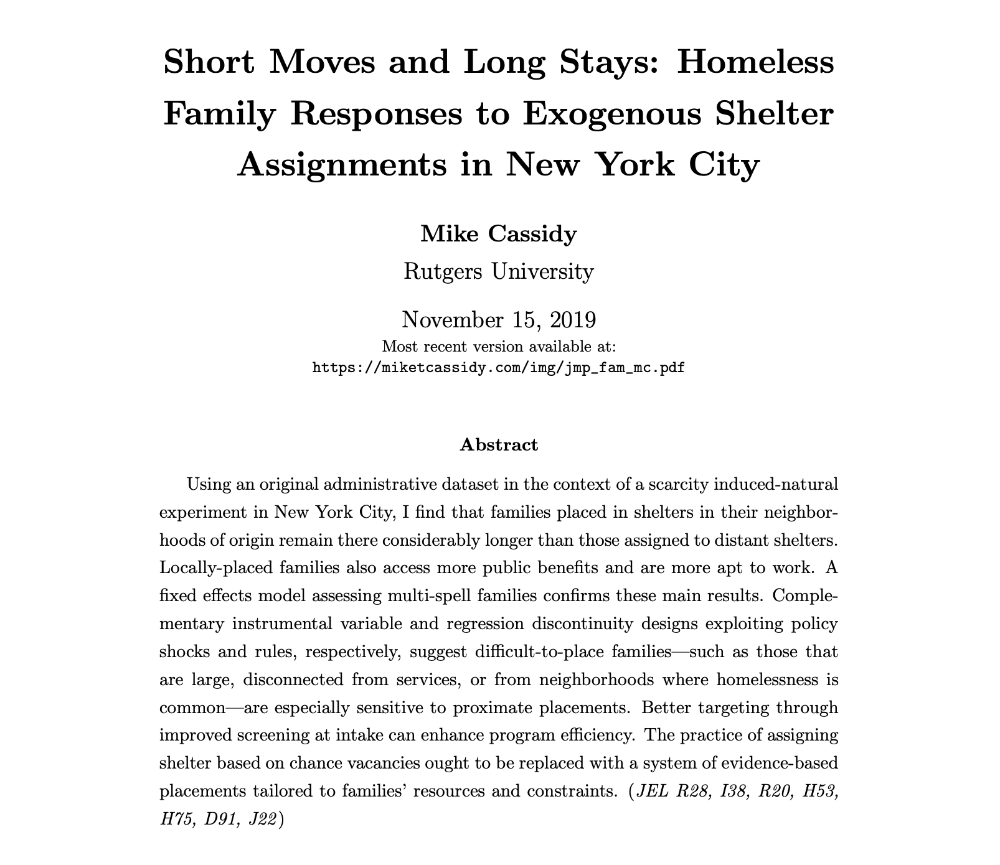

Job Market Papers
A Closer Look: Proximity Boosts Homeless Student Performance in New York City
November 14, 2019
Proximity augments homeless students' educational outcomes. Homeless K--8 graders whose families are placed in shelters near their schools have 8 percent (2.4 days) better attendance, are a third (18 percentage points) less likely to change schools, and exhibit higher rates of proficiency and retention. Homeless high schoolers have 5 percent (2.5 days) better attendance, 29 percent (10 pp) lower mobility, and 8 percent (1.6 pp) greater retention when placed locally. These results proceed from novel administrative data on homeless families observed in the context of a scarcity-induced natural experiment in New York City. A complementary instrumental variable strategy exploiting homeless eligibility policy reveals a subset of proximity-elastic students benefit considerably more. Panel evidence demonstrates homelessness does not cause educational impairment as much as reflect large preexisting deficits.
 Supplemental AppendixShort Moves and Long Stays: Homeless Family Responses to Exogenous Shelter Assignments in New York City
November 15, 2019
Using an original administrative dataset in the context of a scarcity induced-natural experiment in New York City, I find that families placed in shelters in their neighborhoods of origin remain there considerably longer than those assigned to distant shelters. Locally-placed families also access more public benefits and are more apt to work. A fixed effects model assessing multi-spell families confirms these main results. Complementary instrumental variable and regression discontinuity designs exploiting policy shocks and rules, respectively, suggest difficult-to-place families---such as those that are large, disconnected from services, or from neighborhoods where homelessness is common---are especially sensitive to proximate placements. Better targeting through improved screening at intake can enhance program efficiency. The practice of assigning shelter based on chance vacancies ought to be replaced with a system of evidence-based placements tailored to families' resources and constraints.
 Supplemental Appendix